Plotting Math Functions In R
Hi. I have played around with the ggplot2 package in R to create math functions plot. Here is some of my findings and experimental work. Make sure to load ggplot2 in R using library(ggplot2).
library(ggplot2)
Table Of Contents
References
R Graphics Cookbook by Winston Chang (2012)
A Parabola Example
Recall that the parabola comes from \(x^2\). In R, the quadratic function is made first. The ggplot() function is then used along with stat_function(fun = quadratic_fun).
### 1) Parabola:
quadratic_fun <- function(x){
x^2
}
# Basic Plot (Data frame for setting the range)
ggplot(data.frame(x = c(-15,15)), aes(x = x)) +
stat_function(fun = quadratic_fun) + xlim(c(-15, 15))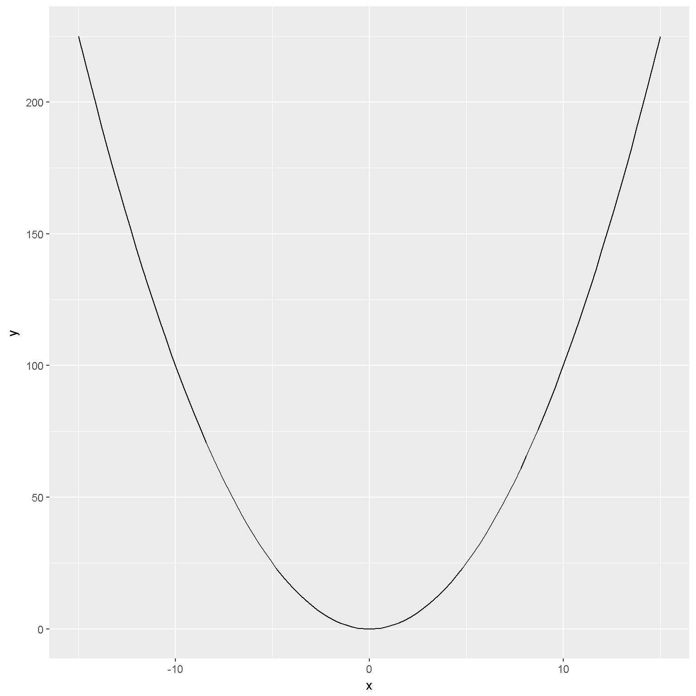
The above plot looks okay but it could use some labels. Here is an updated version of the above in the code and output below.
# Parabola Plot With Labels:
ggplot(data.frame(x = c(-15,15)), aes(x = data.frame(x = x))) +
stat_function(fun = quadratic_fun) + xlim(c(-15, 15)) +
labs(x = "\n x", y = "y \n") +
theme(axis.title.x = element_text(face="bold", colour="blue", size = 12),
axis.title.y = element_text(face="bold", colour="blue", size = 12)) +
annotate("text", x = 0, y = 200, parse = TRUE, size = 5, fontface = "bold",
label="y == x^2")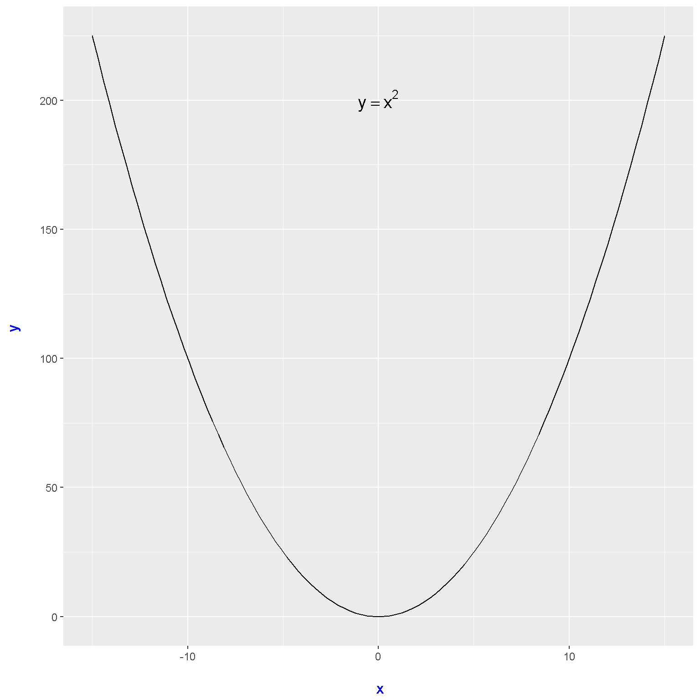
The axes labels have been changed through colour and size. To obtain the \(y = x^2\) on the top, you need the annotate() function. With annotate() you can specify the positioning, text size, fontface and label names.
A Sine Function Plot
This example will be on the sine function or \(y = \sin(x)\). The code is very similar to the parabola example above. Note that radians are used over degrees where \(\pi\) is equal to 180 degrees or the numeric value of 3.14 (two decimals).
### 2) Sine Function:
sine_funct <- function(xrange){
sin(xrange)
}
# Sine Graph Plot With Labels:
sinePlot <- ggplot(data.frame(x = c(-10*pi, 10*pi)), aes(x = x)) +
stat_function(fun = sine_funct) + xlim(c(-5*pi, 5*pi)) + ylim(c(-3, 3)) +
labs(x = "\n x", y = "y \n") +
theme(axis.title.x = element_text(face="bold", colour="blue", size = 12),
axis.title.y = element_text(face="bold", colour="blue", size = 12)) +
annotate("text", x = 0, y = 2.5, parse = TRUE, size = 5, fontface = "bold",
label="y == sin(x)")
# Output the graph:
sinePlot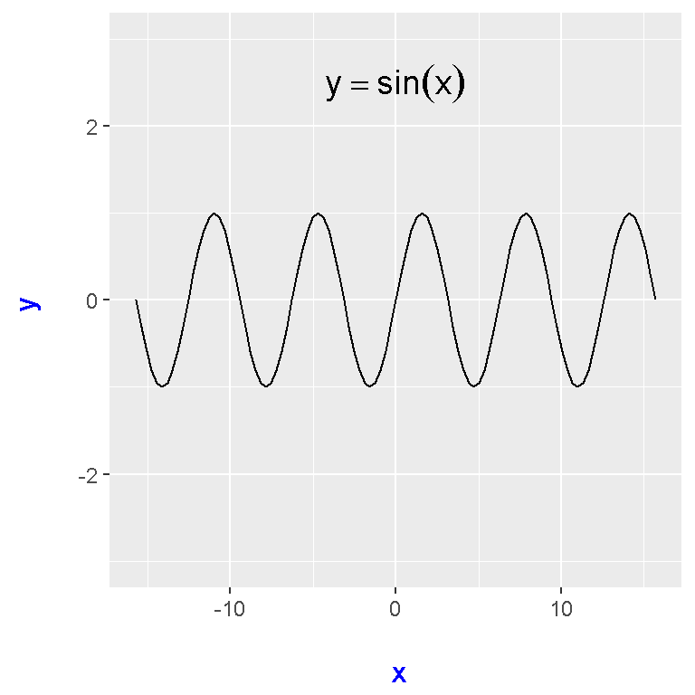
An optional add-on would be adding the \(y = 0\) line.
# Add a line y = 0 to sine plot:
sinePlot + geom_hline(yintercept = 0, linetype = "dotted", colour = "red")
The Absolute Function
Here is an example of plotting the absolute function. Note that I used ifelse() for the function which is a condensed form of using if, else statements.
### 3) Absolute Function:
absolute_funct <- function(x){
ifelse(x >=0, x, - x)
}
# Absolute Value Plot:
ggplot(data.frame(x = c(-10, 10)), aes(x = x)) +
stat_function(fun = absolute_funct) + xlim(c(-15, 15)) +
labs(x = "\n x", y = "y \n") +
theme(plot.title = element_text(hjust = 0.5),
axis.title.x = element_text(face="bold", colour="blue", size = 12),
axis.title.y = element_text(face="bold", colour="blue", size = 12)) +
annotate("text", x = 0, y = 13, parse = TRUE, size = 5, fontface = "bold",
label="y == abs(x)")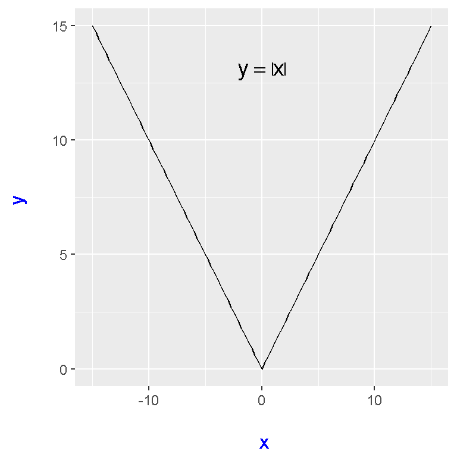
A Square Root Plot
# 4) Square Root Function
sqroot_funct <- function(x){
if (x >= 0) {
sqrt(x)
}
}# Square Root Plot With Labels:
ggplot(data.frame(x = c(0, 20)), aes(x = x)) +
stat_function(fun = sqroot_funct) + xlim(c(0, 15)) + ylim(c(-1, 5)) +
labs(x = "\n x", y = "y \n") +
theme(axis.title.x = element_text(face="bold", colour="blue", size = 12),
axis.title.y = element_text(face="bold", colour="blue", size = 12)) +
annotate("text", x = 10, y = 0, parse = TRUE, size = 5, fontface = "bold",
label="y == sqrt(x)")## Warning in if (x >= 0) {: the condition has length > 1 and only the first
## element will be used
The Reciprocal Function
Here is my attempt on the reciprocal function \(\dfrac{1}{x}\). I am not sure if it turned out right. Here is what I have.
# 5) Reciprocal Function
recip_funct <- function(x){
1/x
}
# 1/x Plot With Labels:
recipPlot <- ggplot(data.frame(x = c(-20, 20)), aes(x = x)) +
stat_function(fun = recip_funct) + xlim(c(-15, 15)) + ylim(c(-10, 10)) +
labs(x = "\n x", y = "y \n") +
theme(axis.title.x = element_text(face="bold", colour="blue", size = 12),
axis.title.y = element_text(face="bold", colour="blue", size = 12)) +
annotate("text", x = 10, y = 5, parse = TRUE, size = 5, fontface = "bold",
label="y == 1/x")
# Output:
recipPlot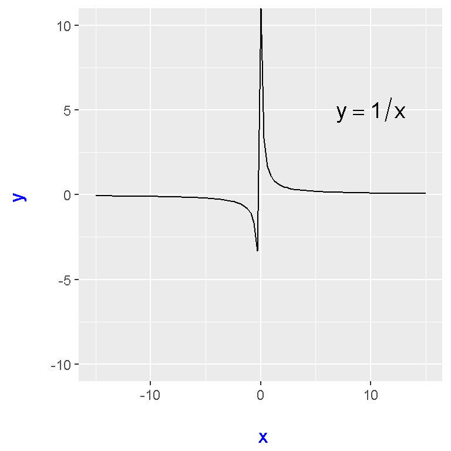
You can add on asymptote lines at \(y = 0\) and at \(x = 0\).
# Horizontal and Vertical Asymptotes:
recipPlot + geom_hline(yintercept = 0, linetype = "dotted", colour = "red") +
geom_vline(xintercept = 0, linetype = "dotted", colour = "red")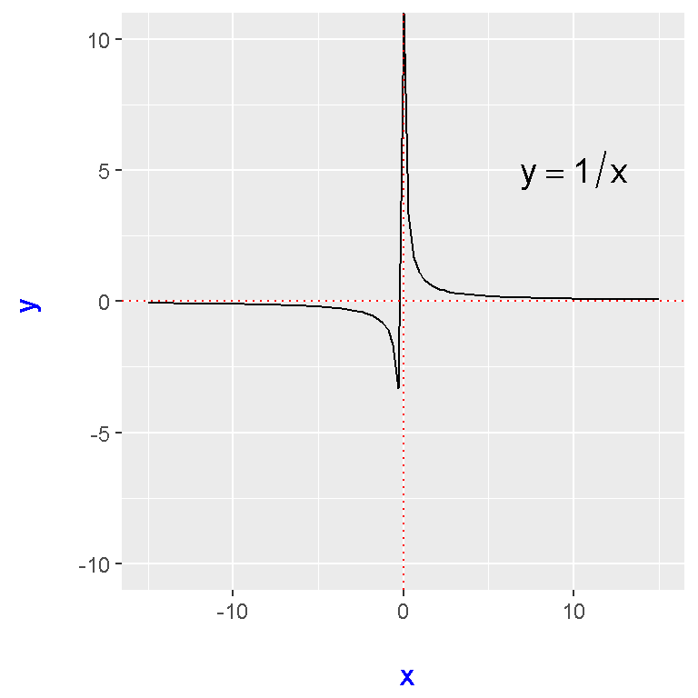
A Exponential Function Plot
# 6) Exponential Function (e^x with e approx 2.718)
exp_funct <- function(x){
exp(x)
}
# Exponential Plot With Labels:
expPlot <- ggplot(data.frame(x = c(-5, 5)), aes(x = x)) +
stat_function(fun = exp_funct) + xlim(c(-7, 7)) + ylim(-1, 500) +
labs(x = "\n x", y = "y \n") +
theme(axis.title.x = element_text(face="bold", colour="blue", size = 12),
axis.title.y = element_text(face="bold", colour="blue", size = 12)) +
annotate("text", x = -4, y = 400, parse = TRUE, size = 5, fontface = "bold",
label="y == e^x")
# Output:
expPlot## Warning: Removed 6 rows containing missing values (geom_path).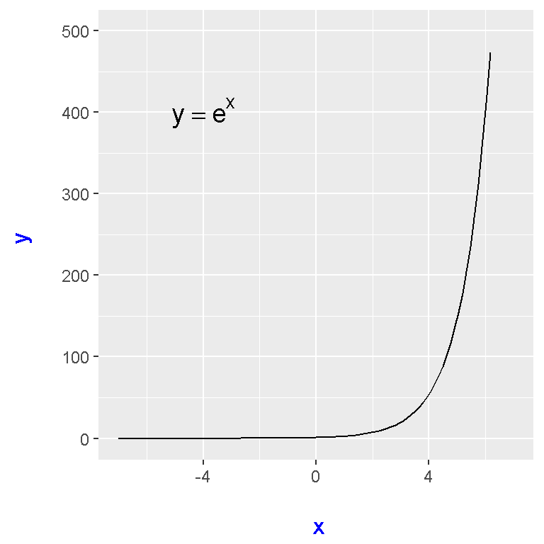
Axes lines can be added as well.
# Output with axes (and asymptotes):
expPlot + geom_hline(yintercept = 0, linetype = "dashed", colour = "darkgreen") +
geom_vline(xintercept = 0, linetype = "dashed", colour = "darkgreen")## Warning: Removed 6 rows containing missing values (geom_path).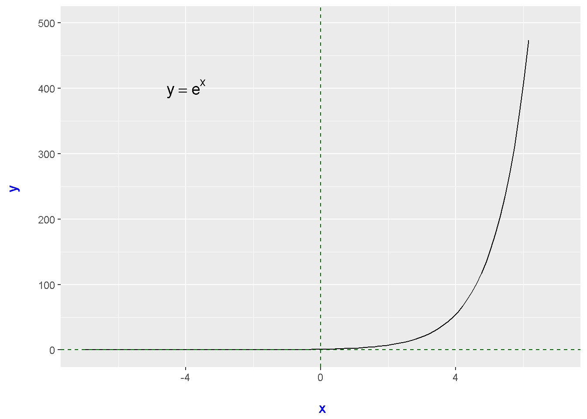
A Logarithmic Function Plot
The inverse (reverse) of the exponential function is the logarithmic function.
# 7) Logarithmic Function
log_funct <- function(x){
log(x)
}
# Logarithmic Plot With Labels:
logPlot <- ggplot(data.frame(x = c(-0.5, 4)), aes(x = x)) +
stat_function(fun = log_funct) + xlim(c(-1, 4)) + ylim(-15, 7) +
labs(x = "\n x", y = "y \n") +
theme(axis.title.x = element_text(face="bold", colour="blue", size = 12),
axis.title.y = element_text(face="bold", colour="blue", size = 12)) +
annotate("text", x = 5, y = 3, parse = TRUE, size = 5, fontface = "bold",
label="y == log(x)")
# Output:
logPlot## Warning in log(x): NaNs produced## Warning: Removed 20 rows containing missing values (geom_path).## Warning: Removed 1 rows containing missing values (geom_text).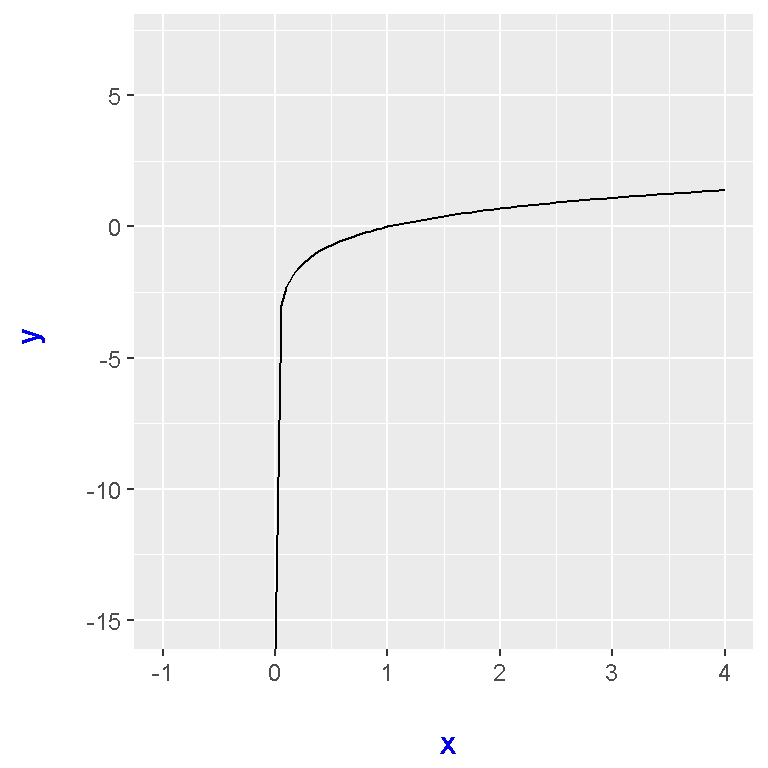
Axes lines can be added as well here.
# Output with axes (and asymptotes):
logPlot + geom_hline(yintercept = 0, linetype = "dashed", colour = "darkgreen") +
geom_vline(xintercept = 0, linetype = "dashed", colour = "darkgreen")## Warning in log(x): NaNs produced## Warning: Removed 20 rows containing missing values (geom_path).## Warning: Removed 1 rows containing missing values (geom_text).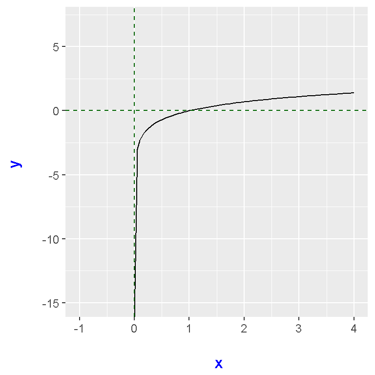
An Example Of Combining Two Functions In A Plot
In this example, the parabola \(y = x^2\) and the \(y = x\) line are put on the same plot.
### Combining Parabola and y = x line:
ggplot(data.frame(x = c(-5,5)), aes(x = data.frame(x = x))) +
stat_function(fun = quadratic_fun, colour = "red") + xlim(c(-5, 5)) + ylim(c(-3,10)) +
labs(x = "\n x", y = "y \n") +
geom_abline(intercept = 0, slope = 1, linetype = "dashed", colour = "blue") +
theme(axis.title.x = element_text(face="bold", colour="blue", size = 12),
axis.title.y = element_text(face="bold", colour="blue", size = 12)) +
annotate("text", x = -4, y = 8, parse = TRUE, size = 5, fontface = "bold",
label="y == x^2") +
annotate("text", x = 4.5, y = 2, parse = TRUE, size = 5, fontface = "bold",
label="y == x") +
geom_hline(yintercept = 0) +
geom_vline(xintercept = 0)## Warning: Removed 38 rows containing missing values (geom_path).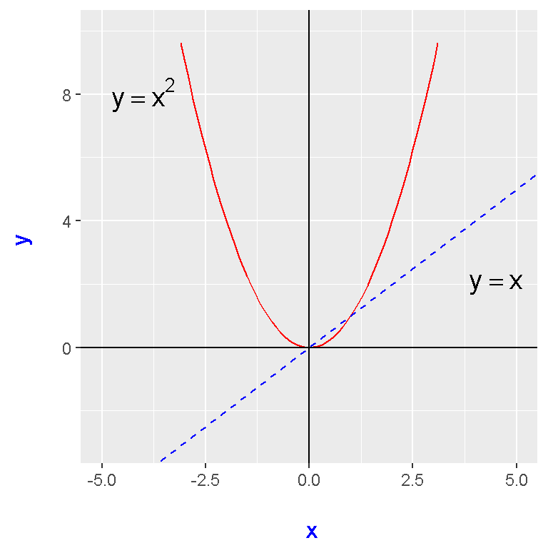